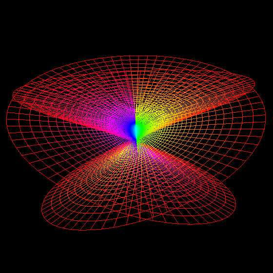
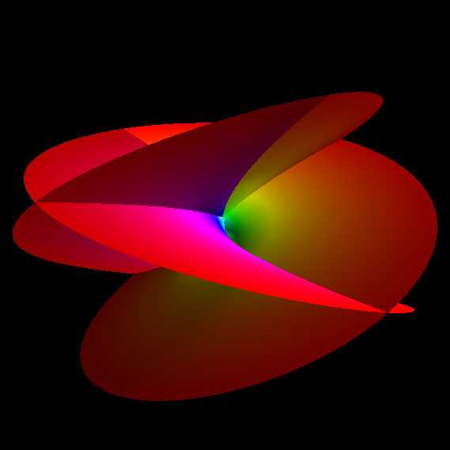
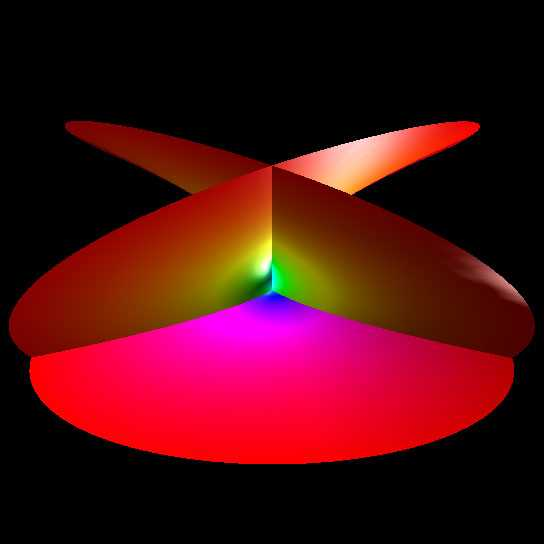

Henneburg Minimal Surface
Written by
Paul Bourke
December 2000
x = 2 sinh(u) cos(v) - 2 sinh(3 u) cos(3 v) / 3
y = 2 sinh(u) sin(v) + 2 sinh(3 u) sin(3 v) / 3
z = 2 cosh(2 u) cos(2 v)
-infinity <= u <= infinity
-infinity <= v <= infinity


